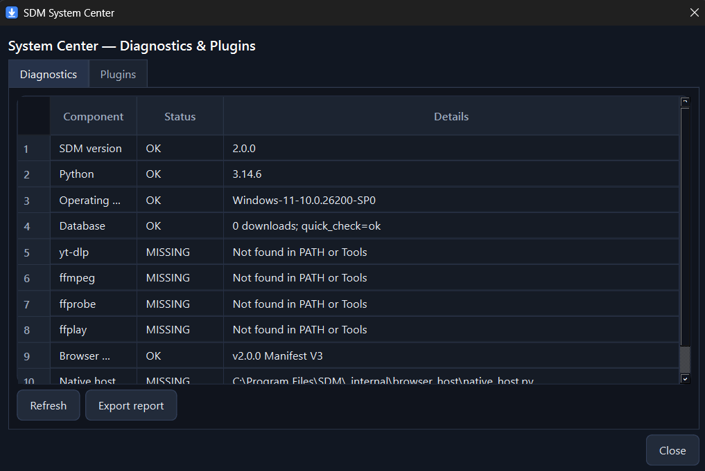

SDM v2.0.0 Final is available
Download smarter.
Faster. Cleaner.
A powerful Windows download manager engineered for speed, reliability and control—with browser capture, adaptive connections, automatic recovery, media inspection and a complete bundled toolchain.
MP4
Project presentation.mp41.28 GB · 31.4 MB/s
86%ZIP
SDM release package.zip62.2 MB · Completed
DoneMP3
Browser audio capture.mp38.4 MB · 7.2 MB/s
63%↯
Current speed38.8 MB/s
✓
System healthAll systems ready
Built for dependable downloads
Browser Capture 2.0Adaptive EngineSHA-256Plugin APIFFmpeg Included
THE COMPLETE DOWNLOAD WORKSPACEOne application.
One application.
Every essential tool.
SDM brings downloading, capture, inspection, recovery and storage intelligence together in one focused Windows experience.
↯
Adaptive download engine
Segmented transfers, resumable sessions and automatic connection tuning based on real server behavior.
◎
Browser Capture
Detect downloadable media and send it directly to SDM.
♫Audio detectedDownload
⟳
Automatic recovery
Reconnect, retry and validate interrupted downloads safely.
▶
Media Inspector
Review formats, subtitles, playlists and streams before download.
#
Storage intelligence
Find duplicates, missing files and reclaim wasted space.
✓
Everything included
yt-dlp, FFmpeg, FFprobe and FFplay ship with the final release. No separate installation or Windows PATH configuration is required.
yt-dlp.exeffmpeg.exeffprobe.exeffplay.exe
SYSTEM CENTER
Know exactly what is ready.
Built-in diagnostics verify the application, database, browser integration, native host and bundled tools in one place.
- Clear component health
- Exportable diagnostic reports
- Plugin visibility and control

SDM v2.0.0 FINAL
Take control of every download.
Install the complete Windows edition or use the portable package.